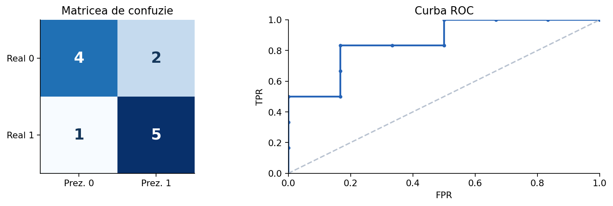

Accuracy nu ne spune ce greșeli face un clasificator. Construim explicit TP, FP, FN și TN, apoi vedem cum schimbă pragul de decizie precizia, recall-ul și forma curbei ROC.
p = 0.73 pentru clasa pozitivă. Folosind pragul 0,5 prezicem clasa 1, dar cu pragul 0,8 prezicem clasa 0. Datele și modelul nu s-au schimbat; s-a schimbat doar regula de decizie.Un prag mare tinde să reducă alertele false, dar poate rata pozitive; unul mic tinde să surprindă mai multe pozitive, dar crește adesea alertele false. Efectul concret depinde de distribuția scorurilor.

scoruri = [0.15, 0.42, 0.73, 0.91] for prag in [0.5, 0.8]: pred = [int(p >= prag) for p in scoruri] print(prag, pred)
O matrice de confuzie nu are mereu aceeași orientare grafică în toate bibliotecile; citim întotdeauna etichetele axelor. Convenția folosită aici: rânduri = clase reale, coloane = clase prezise.
reale = [1, 0, 1, 1, 0, 0] prezise = [1, 0, 0, 1, 1, 0] tp = fp = fn = tn = 0 for y, p in zip(reale, prezise): if y == 1 and p == 1: tp += 1 elif y == 0 and p == 1: fp += 1 elif y == 1 and p == 0: fn += 1 else: tn += 1 print(tp, fp, fn, tn)
1 − TNR.Exemplu: în detectarea unui defect, să avem TP=30, FN=10, FP=5, TN=55. Recall=30/40=0,75; FPR=5/60≈0,083.
tp, fn, fp, tn = 30, 10, 5, 55 print('Recall/TPR:', tp / (tp + fn)) print('Specificity:', tn / (tn + fp)) print('FPR:', fp / (fp + tn))
Acest fenomen este esențial pentru probleme în care costul unei alarme false diferă de costul ratării unui pozitiv. În laborator, mută pragul și urmărește exact ce puncte își schimbă predicția.
Fiecare punct de pe ROC corespunde unui anumit prag; nu trebuie interpretată ca o funcție de timp sau de numărul de iterații.
from sklearn.metrics import roc_curve reale = [0, 1, 0, 1, 0, 1] scoruri = [0.12, 0.89, 0.31, 0.72, 0.60, 0.58] fpr, tpr, praguri = roc_curve(reale, scoruri) for a, b, t in zip(fpr, tpr, praguri): print(round(a, 2), round(b, 2), round(float(t), 3))
ROC-AUC nu stabilește automat pragul potrivit și nu măsoară calibrarea probabilităților. Un model cu AUC bun poate furniza probabilități prost calibrate.
from sklearn.metrics import roc_auc_score reale = [0, 1, 0, 1, 0, 1] scoruri = [0.2, 0.9, 0.3, 0.7, 0.8, 0.6] print(roc_auc_score(reale, scoruri))
average_precision_score este o sumarizare uzuală; nu este identică în toate implementările cu aria calculată prin metoda trapezelor.În competiții cu date dezechilibrate trebuie verificată exact definiția metricii de evaluare, inclusiv media macro/micro și eticheta pozitivă.
from sklearn.metrics import precision_recall_curve, average_precision_score reale = [0, 0, 0, 0, 1, 0, 1, 0] scoruri = [.12, .32, .20, .73, .87, .26, .61, .15] precision, recall, thresholds = precision_recall_curve(reale, scoruri) print('Average precision:', average_precision_score(reale, scoruri)) print('Puncte:', list(zip(precision.round(2), recall.round(2))))
În probleme cu costuri reale (de exemplu, alarmare), alegem pragul după costul erorilor sau după o restricție precum recall minim.
from sklearn.metrics import f1_score y_true = [0, 1, 0, 1, 0, 1] p = [.25, .47, .52, .72, .28, .86] for prag in [.3, .5, .7]: y_pred = [int(x >= prag) for x in p] print(prag, f1_score(y_true, y_pred))
Pentru precision/recall pe o clasă putem trata clasa respectivă drept pozitivă și toate celelalte drept negative (One-vs-Rest). classification_report oferă rapoarte pentru fiecare clasă și medii macro/weighted.
from sklearn.metrics import confusion_matrix, classification_report real = ['A', 'A', 'B', 'B', 'C', 'C'] pred = ['A', 'B', 'B', 'C', 'C', 'A'] print(confusion_matrix(real, pred, labels=['A', 'B', 'C'])) print(classification_report(real, pred, zero_division=0))
Este posibil ca un model să aibă accuracy mare, dar probabilități prost calibrate. Un scor ROC-AUC mare nu garantează calibrarea.
from sklearn.metrics import brier_score_loss, log_loss y = [0, 1, 1, 0] p = [0.2, 0.9, 0.7, 0.6] print('Brier:', brier_score_loss(y, p)) print('Log-loss:', log_loss(y, p))
Compară metodele în condiții corecte: același protocol de evaluare, date de validare separate și o metrică relevantă pentru problema rezolvată. Testul final nu trebuie folosit la alegerea hiperparametrilor.
Exemplele din această lecție sunt didactice; la competiție verifică întotdeauna enunțul, formatul datelor și metrica oficială.
Pentru detalii de implementare: Model evaluation — scikit-learn și Common pitfalls.